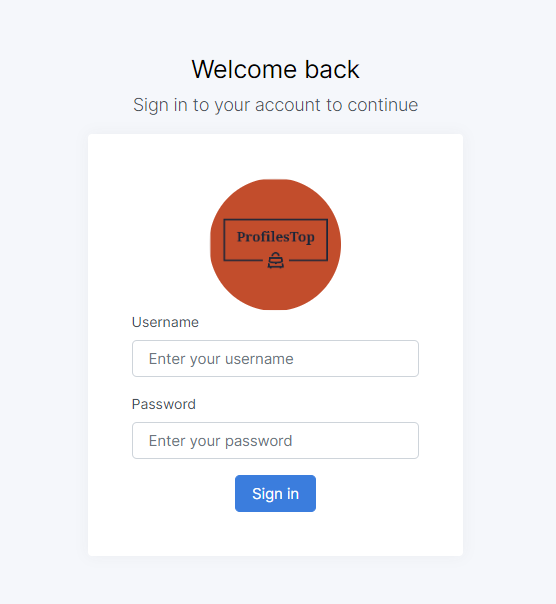

“ProfilesTop CV Sitesi”
“ProfilesTop CV Sitesi”
A) Gereksinimler
- PHP 5.6 veya Üstü
- MySQL 5.7 veya Üstü
B) Kurulum
- Bir Veritabanı Dosyası İçe Aktar
- Bir config/database.php dosyasını açın.
- database.php Dosyasında veritabanı kullanıcısını, şifresini ve adını değiştirin
- Sunucuya Yükleme
- Güncellenmiş proje ana klasörünü Winrar gibi herhangi bir sıkıştırma yazılımı kullanarak bir zip dosyası haline getirin.
- CuteFTP / FileZilla gibi bir FTP istemcisi veya Web sunucusu kullanarak CPanel üzerinden Web alanınıza giriş yapın.
- Scriptinizi yerleştirmek istediğiniz dizine göz atın.
- Scripti kurmak istediğiniz bir klasör seçmeniz önerilir.
- Web ana dizini olarak adlandırılan "public_html" veya "htdoc" gibi bir klasör seçmeniz tercih edilir.
- FTP istemcinizde veya Cpanel'de yükleme düğmesini kullanarak zip dosyasını seçin, ardından zip dosyasının bulunduğu sürücü/dizine göz atın.
- "Yükle", "Gönder" veya FTP istemcinizin ilgili düğmesine tıklayın.
- Transfer tamamlanana kadar bekleyin.
- Yükleme işleminden sonra zip dosyasını açın.
Proje ana klasöründe profilestop.sql dosyasını bulun.
PHPMyAdmin'de bir veritabanı oluşturun ve veritabanı dosyasını veritabanınıza içe aktarın.
- Site ana sayfasını göreceksiniz.

D) Yönetici Detayları
- https://sitenizinadresi.com/admin adresine gidin.
- Bu giriş sayfasıdır. Kullanıcı adı: admin ve şifre: admin123 ile giriş yapabilirsiniz, ardından yönetim paneline yönlendirileceksiniz.
- Geçerli yönetici bilgilerini değiştirme: Sağ üst köşedeki adınıza tıklayın ve ardından profil'e tıklayın. Şimdi verilerinizi düzenleyebilirsiniz.
- Kullanıcıları kontrol etmek için sol kenar çubuğunda "Kullanıcılar" a tıklayın. Kullanıcıları arama, düzenleme ve silme yapabilirsiniz, ancak yönetici olan ana kullanıcıyı silemezsiniz.
- Kullanıcı Ekle: "Kullanıcı Ekle" düğmesine tıklayın ve yeni bir kullanıcı ekleyebilirsiniz.
- Kullanıcıyı Düzenle: Düzenleme simgesine tıklayın ve kullanıcıyı düzenleyebilirsiniz.
- Kullanıcıyı Sil: Silme simgesine tıklayın ve kullanıcıyı silebilirsiniz.
- Site Ayarları - Ad: Sol kenar çubuğunda "Ayarlar" a tıklayın ve site adı ve açıklamasını düzenleyebilirsiniz.
- Site Ayarları - Logo: Sol kenar çubuğunda "Ayarlar" a tıklayın ve ardından logo'ya tıklayarak site logosunu güncelleyebilirsiniz.
- Site E-posta Ayarları: Sol kenar çubuğunda "Ayarlar" a tıklayın ve ardından "E-posta"ya tıklayarak site e-posta detaylarını güncelleyebilirsiniz.
- Site SEO Ayarları: Sol kenar çubuğunda "Ayarlar" a tıklayın ve ardından "Site SEO"ya tıklayarak site SEO detaylarını güncelleyebilirsiniz.

İlker Şahin Koç